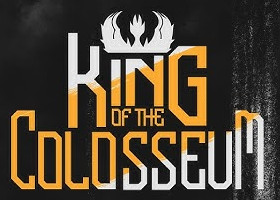
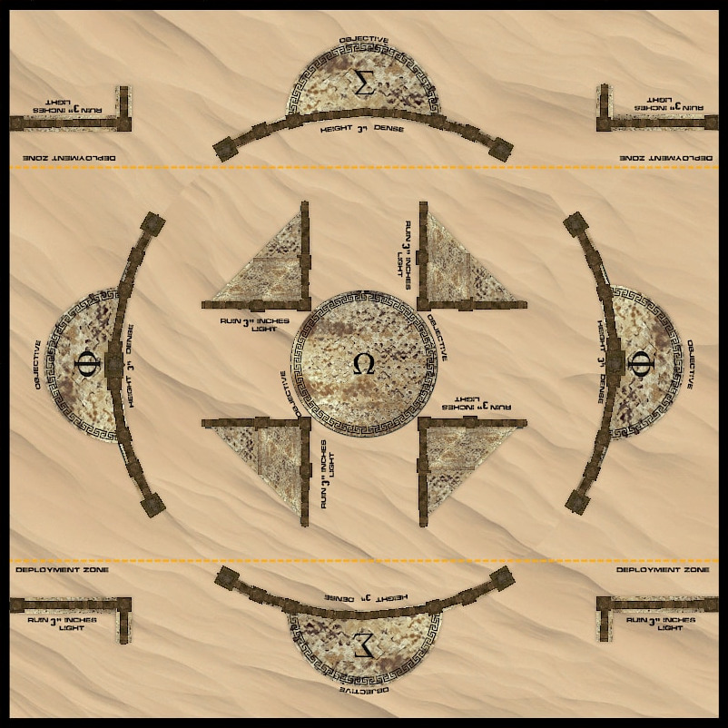
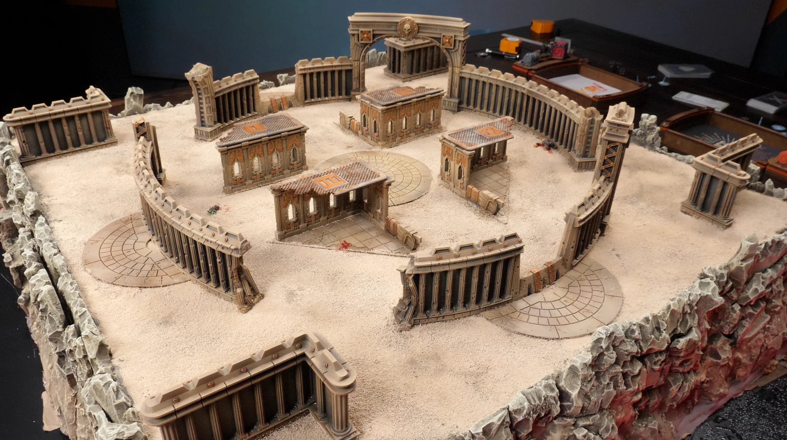

King of the Colosseum è un formato per partite brevi e brutali con liste da 600 punti.
Si seguono le normali regole per adunare le armate a livello Incursione, con le seguenti modifiche:
Si usano le regole e le missioni secondarie (esclusivamente missioni tattiche) di Armageddon. La missione primaria dipende dall'incrocio fra le disposizioni dei due eserciti, come di norma. Nota che, poiché si tratta di una Incursione, le unità con Linea di Battaglia possono iniziare a svolgere un’Azione anche se hanno Avanzato, e iniziare a svolgere un’Azione non le rende non idonee a sparare.
Il campo di battaglia è un quadrato di 36 pollici di lato, con questo posizionamento dei terreni:

Tutti i muri sono elementi di terreno fitti e compatti, e sono alti 3 pollici e mezzo.
Le zone di schieramento si estendono per 8 pollici oltre il bordo del tavolo di ciscun giocatore.
Le aree semicircolari e i muri dell'arena fanno parte dello stesso obiettivo, il che significa che gli obiettivi possono essere controllati toccando le mura e che le lunette bloccano la linea di vista. L'obiettivo circolare al centro è un'area di terreno senza alcun elemento, il che significa che fornisce copertura ma non blocca la linea di vista.
Il muro che fa parte degli obiettivi nelle zone di schieramento ha la parte centrale più bassa, per cui è possibile tracciare una linea di vista da un obiettivo all'altro.
